The visual system & CNNs
Reader-friendly version of the 44 lecture slides: the lecture content in normal flow, with figure descriptions and data tables where the figure carries data. Open the presentation.
Slide 1

The visual system & CNNs
Slide 2
How do we make a network generalize better?
Regularization: any change to training that gives up some fit to the training data to do better on new data
Slide 3
Regularization 1: a penalty on the weights
Computed: the curve fit's 10 points, after Bishop (2006), Fig. 1.7

Four panels of the degree-9 polynomial fitted to the same 10 points, with an increasing penalty. No penalty: through every point, swinging far off, error on new points 0.86. Lambda 10 to the minus 7: a smooth curve close to the dashed one, 0.34. Lambda 10 to the minus 3: smooth, 0.34. Lambda 1: an almost flat line, training error 0.49, error on new points 0.61. Open green circles: 25 of the new points the error on new points is measured on
Open full-size figure- Weight penalty = weight decay = L2 regularization; added to least squares, as in this polynomial fit, it is ridge regression. Too large a underfits
Slide 4
Without the penalty, a readout's weights keep growing
![Three panels for the IT readout of last lecture, six categories from 100 IT sites, as a logistic regression trained on 300 images, each against gradient steps on a log axis, with a dashed vertical line at step 121 on every panel where the two runs part. Left: the size of the weights; without a penalty it keeps rising, to about 10.7; with weight decay it levels off near 3.5. Middle: the training cross-entropy on a log axis; without a penalty it falls toward zero, to 0.0015; with weight decay it levels off near 0.11. Right: held-out accuracy on the 924 images training never saw; it rises to about 0.85 by the split and then stays flat for both runs, 0.85 without a penalty and 0.86 with it](../images/L10/it_weight_norm.svg)
Three panels for the IT readout of last lecture, six categories from 100 IT sites, as a logistic regression trained on 300 images, each against gradient steps on a log axis, with a dashed vertical line at step 121 on every panel where the two runs part. Left: the size of the weights; without a penalty it keeps rising, to about 10.7; with weight decay it levels off near 3.5. Middle: the training cross-entropy on a log axis; without a penalty it falls toward zero, to 0.0015; with weight decay it levels off near 0.11. Right: held-out accuracy on the 924 images training never saw; it rises to about 0.85 by the split and then stays flat for both runs, 0.85 without a penalty and 0.86 with it
Open full-size figure- The IT readout (100 sites, 300 images): after the paths split (dashed), a longer only adds confidence
- Held-out accuracy stays put, 0.85 without the penalty and 0.86 with it: same accuracy, less confidence
Slide 5
Ridge regression: the penalty on a neuron model
![Two panels for one monkey IT recording site and 512 features of the trained network's late layer. Left: predicted against recorded responses for a ridge fit; training images faint magenta, held-out images green, both scattered along the diagonal, R-squared 0.71 on training and 0.69 on held-out images. Right: R-squared against the penalty lambda on a log axis; with almost no penalty, training R-squared is 0.85 and held-out R-squared 0.28; as the penalty grows, training R-squared falls while held-out R-squared rises to meet it near 0.69 at the penalty chosen on the training images, then both fall](../images/L07/encoding_fit_heldout.svg)
Two panels for one monkey IT recording site and 512 features of the trained network's late layer. Left: predicted against recorded responses for a ridge fit; training images faint magenta, held-out images green, both scattered along the diagonal, R-squared 0.71 on training and 0.69 on held-out images. Right: R-squared against the penalty lambda on a log axis; with almost no penalty, training R-squared is 0.85 and held-out R-squared 0.28; as the penalty grows, training R-squared falls while held-out R-squared rises to meet it near 0.69 at the penalty chosen on the training images, then both fall
Open full-size figureComputed: one monkey IT site (Bao et al. 2020), 1,224 object images, 512 late-layer units of ResNet-18; a random fifth held out
- Encoding model: predict one IT site from 512 network units by ridge regression, squared error plus the weight penalty. λ by cross-validation (
RidgeCV), on held-out images
Slide 6
Ridge regression is what the assignments use
- The second assignment fit this model:
RidgeCVchooses λ inside each training fold, and comes from the outer folds (nested cross-validation) - The next assignment fits the same model to V1, V4 and IT sites, one λ per site, from each of 16 stages of a network, and asks which stage predicts each area best
- Both score on held-out images only: λ is never chosen on the images you report
Slide 7
Regularization 2: dropout

Three copies of the same small network: in the first two, a different random half of the hidden units is switched off for one training step each, with their connections removed; in the third, at test time, all units are on
Open full-size figure- Dropout: at each training step, switch off a random half of the hidden units; all are on at test time
- Often with the weight penalty, sometimes L1 (absolute values): each cuts the freedom to fit noise
Slide 8
Regularization 3: more examples
Computed: the same curve and noise, after Bishop (2006), Fig. 1.6

Four panels of the same degree-9 polynomial fitted to more and more noisy points from the dashed sine-shaped curve. N equals 10: the curve swings far off, error on new points 0.86. N equals 15: close to the dashed curve, 0.34. N equals 30: 0.35. N equals 100: the fitted curve follows the dashed one, training error 0.28, error on new points 0.31. Open green circles: 25 of the new points the error on new points is measured on
Open full-size figure- Last lecture: the same degree-9 polynomial fitted to 10, 15, 30 and 100 points; test RMSE 0.86 → 0.31
- With 10 points it passes through every one; with 100 it cannot, and follows the curve instead
- More examples always help the same model: overfitting is flexibility relative to the number of examples
Slide 9
No more data? Make altered copies of it

Four versions of one photograph of a pink orchid: the original; flipped left to right; cropped and enlarged; and with its colour faded and raised
Open full-size figure- Data augmentation: train on altered copies that keep the label (flipped, cropped, recoloured). AlexNet trained on 2,048 versions of each photo
- An augmentation states what should not change the label: a flipped orchid is still an orchid
Slide 10
Try it at home: overfit, then regularize
- The backprop lecture's network, 30 training points, 15% of labels flipped. Train: held-out loss falls, then rises. Then add λ, dropout, or more points (what to try: in the notes)
Slide 11
Which brain areas turn an image into an object?
People spot an animal in a glance shorter than a blink. What does each area along the way compute?
Slide 12
Core object recognition: the behavior to explain
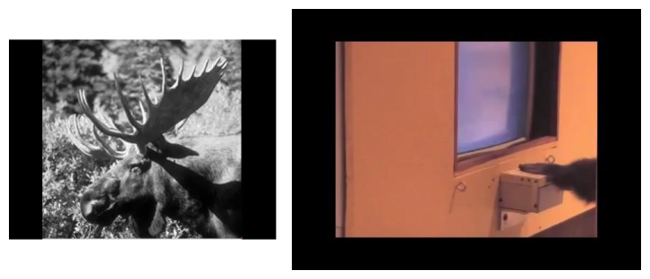
Frames from a rapid-categorization experiment: a briefly flashed animal photograph and a subject answering at a response box
Open full-size figure- A photograph flashed for 20 ms: is there an animal in it? People are 94% correct, and their frontal EEG separates animal from non-animal images by 150 ms
- Too fast for eye movements or many back-and-forth loops: recognition rides mostly on one feedforward sweep through the visual system
- Monkeys do the same task, and activity in their ventral stream carries the category early enough to drive the fast responses
Slide 13
The ventral stream: a hierarchy of areas

The ventral-stream hierarchy from retina and LGN through V1, V2, V4 to IT, with latencies growing from about 40 to 100 ms and neuron counts per stage
Open full-size figure- Retina → LGN → V1 → V2 → V4 → IT: each area responds later, and its receptive fields (the part of the visual field a neuron responds to) are larger
- Tuning gets more complex (edges, parts, objects) and more tolerant of position and size
- In IT, a linear readout of ~100 neurons reports the category: untangling, measured
Slide 14
From the retina to V1, in one slide
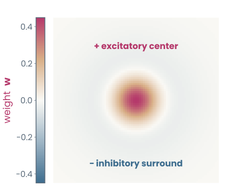
Center-surround weights: a positive center ringed by a negative surround
Open full-size figure
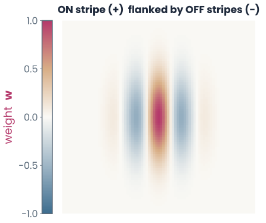
Gabor weights: oriented light and dark stripes inside a smooth elliptical window
Open full-size figure
- About 100 million photoreceptors feed about 1 million ganglion cells: the eye compresses first
- Ganglion and LGN cells: a center–surround template (left) that reports local contrast
- V1 simple cells: a Gabor template (right), light and dark stripes inside a smooth window, that reports an edge at one orientation
Slide 15
Simple and complex cells
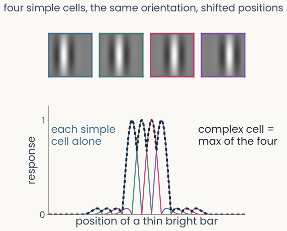
Top: four model simple cells, vertical Gabor templates at four positions a quarter wavelength apart. Bottom: each simple cell's response to a thin bright bar as the bar moves across, a narrow peak per cell, and the complex cell's response, the maximum of the four, high over the whole range they cover
Open full-size figure
Computed on model cells
- Simple cell: an oriented template at one position. It needs the right pattern in the right place, an "AND" of its inputs: selectivity
- Complex cell: the same orientation, anywhere in a larger field. It behaves like the maximum over simple cells at nearby positions, an "OR": invariance to position
- Max-like pooling has been measured: in cat V1 complex cells and in macaque V4
Slide 16
Where do V1 receptive fields come from without labels?
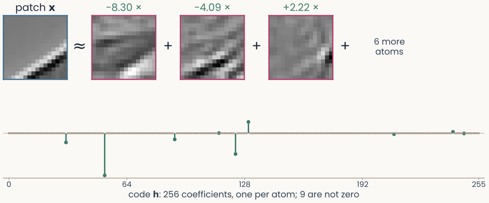
One 16 by 16 whitened image patch, shown to be approximately equal to the sum of three learned atoms, each an oriented stripe pattern multiplied by its coefficient, plus a few more atoms. Below, a stem plot of the patch's 256 code coefficients, almost all exactly zero
Open full-size figure
- Sparse coding: describe each patch of a photograph as a weighted sum of a few small images, the atoms, out of 256. Learn the atoms that do this best: no labels
Computed: 16 × 16 patches of whitened natural photographs
Slide 17
The payoff: sparse codes → V1 receptive fields
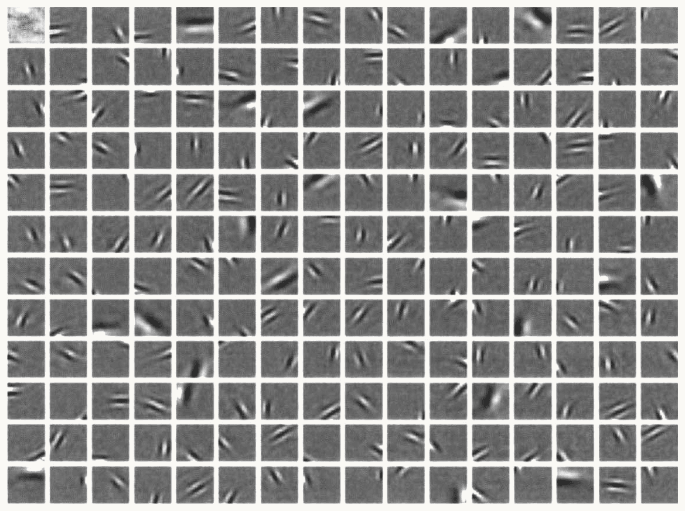
Olshausen and Field 1996 Fig. 4a: a grid of 192 learned basis functions, each a 16 by 16 grey square containing a small oriented light and dark stripe pattern at a different position, orientation and size
Open full-size figure
- The atoms are localized, oriented and bandpass (one band of stripe widths): like Gabors
- Nothing about edges was built in: a sparse code of natural images was enough
Slide 18
Measured against V1
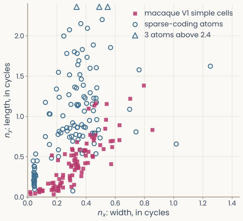
Scatter of Gabor width nx against length ny, in cycles. Magenta squares: 93 macaque V1 simple cells, mostly below 0.6 on both axes. Open blue circles: the Gabor-fitted atoms of our sparse code, spread to larger values of ny, many above 0.8
Open full-size figure
- Fit a Gabor to each atom; compare with 93 macaque V1 simple cells (Ringach 2002). : the window's width across the stripes, : its length along them, in stripe cycles
- Medians, atoms vs cells. Width matches: 0.33 vs 0.32. Length does not: 0.87 vs 0.41
- A sparse code gets V1's width right and its length wrong
Slide 19
Selectivity, then invariance, repeated
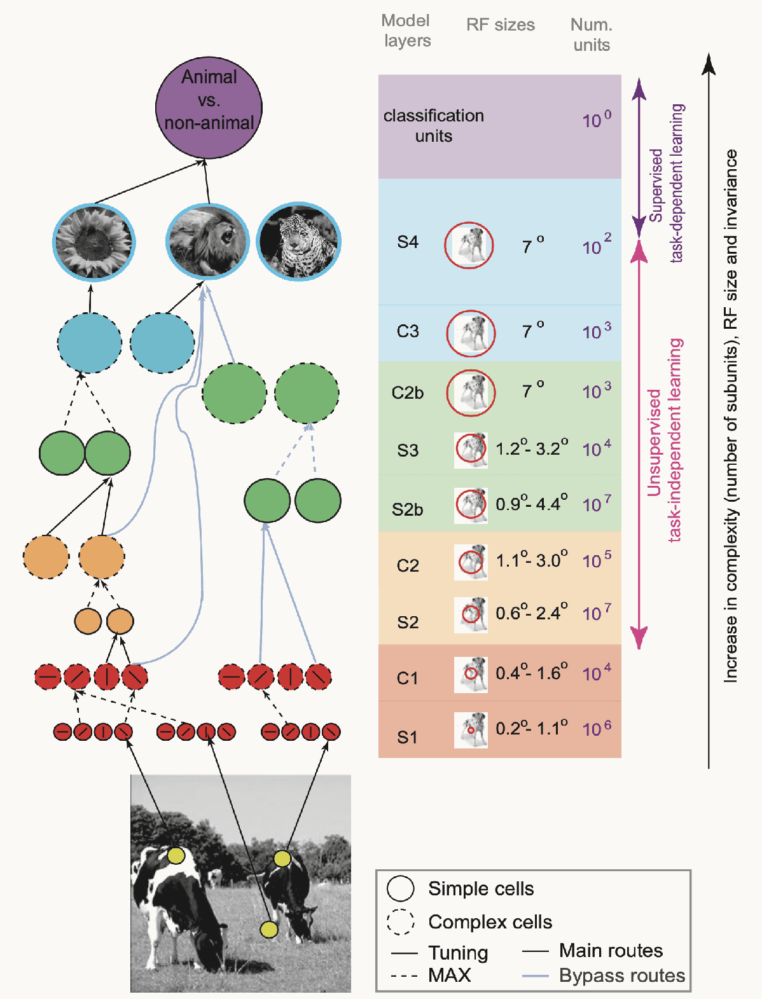
The HMAX model: from a photograph of cows, layers of simple units (solid circles, tuning) alternate with complex units (dashed circles, MAX) up to animal versus non-animal classification units; a table beside it lists each layer, S1 to S4, its receptive-field size, growing from 0.2 to 7 degrees, and its number of units
Open full-size figure
- Fukushima's Neocognitron (1980) and HMAX (Riesenhuber & Poggio 1999) alternate template matching (S, simple) and pooling (C, complex; HMAX takes the maximum), up to IT
- At each step, receptive fields grow; units get more selective and more tolerant
- HMAX's filters are set by hand or copied from natural images; only its top stage learns from labels. On rapid animal categorization it did about as well as people
Slide 20
Can a network learn this hierarchy from labeled images?
Convolution, pooling, depth, and the tricks that make deep networks train
Slide 21
A neuron is a feature detector: template matching
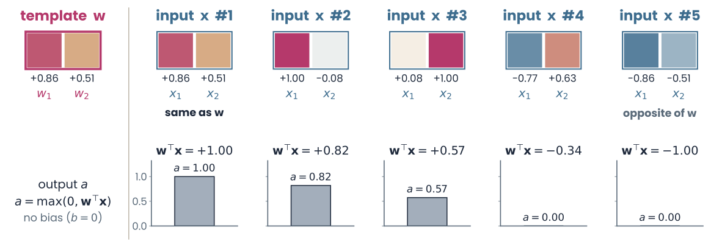
Left, the template w, a two-pixel patch with values +0.86 and +0.51, each pixel coloured warm for positive and cool for negative values. Right, five two-pixel inputs of length 1, each with its dot product with w and the output a = max(0, wᵀx), no bias: input 1, the same as w, wᵀx = +1.00, a = 1.00; input 2, +0.82, a = 0.82; input 3, +0.57, a = 0.57; input 4, −0.34, a = 0; input 5, the opposite of w, −1.00, a = 0
Open full-size figure
- Among inputs of the same length , is largest when looks like the weights , so acts as a stored template
- All inputs have length 1, so is the cosine of the angle to ; ReLU clips negatives to 0
- Set the weights by hand to a pattern → the neuron becomes a detector for that pattern
Slide 22
Why not a dense layer on the pixels? Count the weights

Horizontal bars on a log axis: 96 filters of 11 by 11 by 3, reused at every position, 34,848 weights; 96 dense units, each wired to every pixel of a 224 by 224 colour image, 14,450,688 weights
Open full-size figure- Flatten a 224 × 224 colour image into a vector: one dense unit (one weight per input value) needs 224 · 224 · 3 = 150,528 weights, and it ignores which pixels are neighbours
- AlexNet's first layer instead learns 96 small filters of 11 × 11 × 3 and reuses each one at every position: 34,848 weights, about 400 times fewer than 96 dense units
- Local filters, the same everywhere: the simple cell's template, copied across the visual field
Slide 23
Convolution: one filter, slid over the image

Left, the grey-level tiger photograph with a small magenta box at one position; middle, an 11 by 11 filter of oriented light and dark stripes; right, the feature map: bright where the image contains stripes at the filter's orientation, dark elsewhere, with the strongest response circled at the boxed position
Open full-size figureComputed on the tiger photograph of the first lecture
- A filter (or kernel: a template, as on the template-matching slide) is a small grid of weights. At each position, multiply by the pixels under it and sum; a ReLU sets negatives to 0
- The result is a feature map: how well each part of the image matches the filter
- Same weights everywhere: shift the image, and the map shifts with it (equivariance)
Slide 24
The convolutional layer, in notation
- : the layer's feature maps, of them, one channel per filter; is each map's height and width
- : the layer's filters, each , one slice per input channel · slides them over · : one bias per channel · : ReLU
- It is the MLP layer with each unit wired only to a patch of all input maps, and the same weights at every position. Weights per layer:
Slide 25
Stride and padding set the size of a map

Two panels. Left: a 5 by 5 input surrounded by one ring of zeros, a 3 by 3 filter at its first position and, dashed, one step to the right, labelled stride 1; output 5 by 5. Right: the same input with the filter moved two steps, stride 2; output 3 by 3
Open full-size figure- Stride : how far the filter moves between positions. Stride 2 skips every other position, so the map is about half as tall and half as wide
- Padding : rows and columns of zeros around the input, so the filter can also sit on the border
- Output size for a filter: . ResNet-50's first layer: 224, , , , gives 112
Slide 26
Pooling: from a map to fewer numbers

A 4 by 4 feature map with values 0 to 6, shaded in four 2 by 2 windows. Upper arrow: max-pooling with 2 by 2 windows and stride 2 keeps the largest value in each window, giving the 2 by 2 map 5, 1, 1, 6. Lower arrow: global average pooling averages all 16 values into one number, 1.625
Open full-size figure- Max-pooling keeps the largest value in each small window: the complex cell's "OR", which tolerates small shifts
- Global average pooling averages each feature map over all its positions: one number per channel. These numbers, one per channel, form the image's feature vector, the readout's input
- Two ways to shrink a map: pooling, or a stride-2 convolution. Many modern networks use mostly the second, then one global average
Slide 27
A mini-HMAX in PyTorch
class MiniHMAX(nn.Module):
def __init__(self, num_classes):
super().__init__()
self.s1 = nn.Sequential(nn.Conv2d(3, 16, kernel_size=5, padding=2), nn.ReLU())
self.c1 = nn.MaxPool2d(4) # max over 4 × 4 blocks
self.s2b = nn.Sequential(nn.Conv2d(16, 64, kernel_size=7, padding=3), nn.ReLU())
self.c2b = nn.AdaptiveMaxPool2d(1) # max over all positions
self.readout = nn.Linear(64, num_classes)
def forward(self, images): # (batch, 3, 224, 224)
hidden = self.s1(images) # (batch, 16, 224, 224)
hidden = self.c1(hidden) # (batch, 16, 56, 56)
hidden = self.s2b(hidden) # (batch, 64, 56, 56)
pooled = self.c2b(hidden).flatten(1) # (batch, 64)
return self.readout(pooled) # class logits
- S: template matching (convolution, ReLU); C: a maximum over positions. HMAX's bypass route, S1 → C1 → S2b → C2b: the network you will train, with Adam, then a cosine schedule (
CosineAnnealingLR), keeping the best validation epoch
Slide 28
What the first layer learns

AlexNet's 96 first-layer filters from Krizhevsky et al. 2012, Figure 3: the top three rows mostly grey oriented edges and gratings at several sizes, the bottom three rows mostly colour blobs and colour edges
Open full-size figure- Each tile is one of AlexNet's 96 first-layer filters, 11 × 11 × 3, shown as a colour image
- Learned from 1.2 million labeled images: oriented edges, gratings and colour blobs
- Nobody set them: training on labels alone produced Gabor-like filters, like V1 simple cells
Slide 29
Template matching, measured

Three first-layer AlexNet units. For each, its weights on the left, then the 9 natural image patches out of 6,400 that drive it hardest, each with its response relative to the strongest patch. Unit 1: 1.00 down to 0.73; unit 2: 1.00 down to 0.65; unit 3: 1.00 down to 0.61. For the unit tuned to diagonal edges, the patches look like the weights
Open full-size figure- AlexNet's first layer, 11 × 11 colour patches. You made a version of this figure in the second assignment
- The top 9 of 6,400 patches by ; the 9th still gives 0.61–0.73 of the top
- For a unit tuned to edges at one angle, the patches look like the weights. Not every unit is that simple
Slide 30
Deeper networks: add the input back

A residual block: the block input A passes through a 1 by 1 convolution with BatchNorm and ReLU, a 3 by 3 convolution with BatchNorm and ReLU, and a 1 by 1 convolution with BatchNorm, together labelled F of A, the change the block learns; a green skip connection carries A unchanged around them to a plus node, followed by a ReLU, giving the block output g of A plus F of A
Open full-size figure- Stacking more plain layers made networks harder to train: a 56-layer network reached higher training error than a 20-layer one
- A residual block computes a change and adds it to its input: output . The added path is a skip connection
- If a block is not needed, its change can stay near zero and the input passes through: networks of 50 to 152 layers trained well
- Each convolution is followed by BatchNorm, explained two slides on
Slide 31
ResNet-50: four block groups

ResNet-50 from left to right: a 224 by 224 tiger image; conv1, a 7 by 7 convolution at stride 2, 112 by 112; max-pool, 56 by 56; layer1, 3 blocks, 56 by 56; layer2, 4 blocks, 28 by 28; layer3, 6 blocks, 14 by 14; layer4, 3 blocks, 7 by 7; global average, 1 by 1; readout
Open full-size figure- ResNet-50 stacks 16 residual blocks in four block groups, named
layer1tolayer4in PyTorch. Each group after the first starts by halving the maps' height and width layer4is the last group: its 7 × 7 maps are averaged (global average pooling) into the image's feature vector, then a readout names the category- The ResNet-18 you recorded earlier in the course uses the same names; its
layer1,layer3andlayer4were the early, middle and late stages
Slide 32
Batch normalization

Three histograms of one channel of ResNet-50's first layer over 64 photographs and every position. Before: mean minus 0.81, standard deviation 3.19, spread from about minus 10 to 10. After subtracting the batch mean and dividing by the batch standard deviation: mean 0, standard deviation 1. After the learned scale gamma and shift beta: mean 0.58, standard deviation 0.36
Open full-size figureComputed: ResNet-50, 64 Imagenette photographs
- As training changes the weights of earlier layers, the scale of each channel's values drifts. Batch normalization (BatchNorm) rescales every channel, layer after layer
- For each channel: subtract the mean and divide by the standard deviation (s.d.) of the current minibatch (all its images and positions), then apply a learned scale and shift
Slide 33
Training mode and evaluation mode

Two rows. Training mode, model.train(): a minibatch of images gives the batch mean and variance, used to normalize before gamma and beta and the next layer; the batch statistics also update a stored running mean and variance. Evaluation mode, model.eval(): images to classify are normalized with the stored running mean and variance, then gamma and beta, then the next layer
Open full-size figure- Training mode normalizes with the minibatch's own statistics, and updates a running mean and variance: averages over the training batches
- Evaluation mode (
model.eval()) normalizes with those stored values instead - The stored values are not weights: no gradient changes them.
model.eval()does not turn gradients off
Slide 34
How do we reuse a network trained on other images?
Freeze it, fine-tune part of it, or start from features learned without labels
Slide 35
Freeze the encoder, or fine-tune the last block group

The same ResNet-50 diagram, now coloured: conv1, max-pool and layer1 to layer3 in grey, frozen, weights kept; layer4 and the readout in magenta, trained on the new task, fine-tuned
Open full-size figure- The encoder is every layer before the readout. Frozen: its weights stay fixed. Fine-tuning: keep training some pretrained weights on the new task
- A middle road between a new readout on frozen features and backprop into every layer: freeze
conv1tolayer3; fine-tunelayer4and the readout - Freezing the weights does not freeze BatchNorm: in
model.train()the frozen layers' running statistics still change. Keep their BatchNorm in evaluation mode
Slide 36
Which layers transfer to a new task?
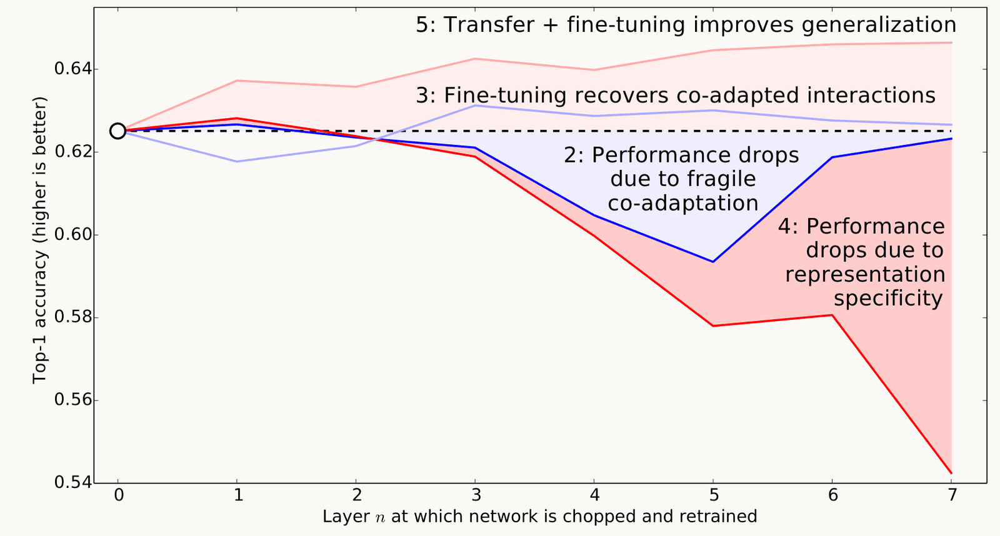
Yosinski et al. 2014, Figure 2 bottom: top-1 accuracy against the layer n at which the network is chopped and retrained, 0 to 7. The baseline is a dashed line at 0.625. The red line, frozen layers copied from a network trained on other categories, stays near baseline for layers 1 and 2 and falls to 0.54 at layer 7. The pink line, the same copied layers fine-tuned, stays above the baseline at every layer, about 0.64
Open full-size figure
- Yosinski et al. (2014): train on 500 ImageNet categories, copy the first layers into a network for the other 500, train the rest
- Copied and frozen (red): two layers did as well as training from scratch; more hurt, most at the top. Early features are general, late ones specific
- Copied and fine-tuned (pink): better than from scratch at every depth
Slide 37
A vision transformer trained without labels
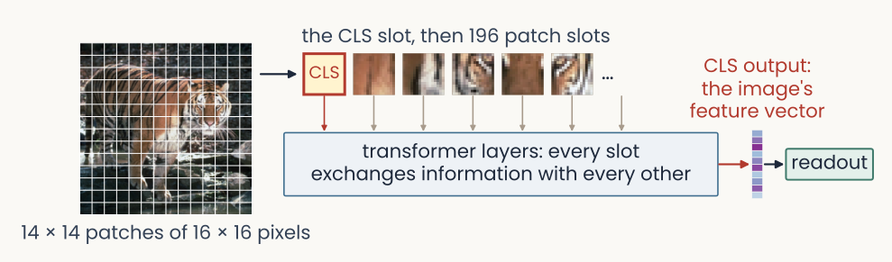
The tiger image cut into a 14 by 14 grid of 16 by 16 pixel patches. An arrow leads to a row of slots: a CLS slot first, then one slot per patch. Transformer layers in which every slot exchanges information with every other. The CLS slot's output is the image's feature vector, which goes to a readout
Open full-size figure
- A vision transformer (ViT) cuts the image into 16 × 16-pixel patches, one token each; every token exchanges information with every other
- One extra token, the class token (CLS), gathers from all patches; its final value is the feature vector
- DINO trains it without labels (self-supervised): two crops of one photograph must get matching features. It trains ResNets the same way: the DINO ResNet-50 you read out in the second assignment
Slide 38
What does a network rely on? Texture or shape

Three images: a photograph of a ginger cat labelled shape: cat; a close-up of grey wrinkled elephant skin labelled texture: elephant; and the cue-conflict image, the cat's outline filled with elephant-skin texture
Open full-size figure- Recall the generalization lecture: an ImageNet-trained ResNet-50 calls a cat with elephant skin "elephant"; people go by the shape (Geirhos et al. 2019). Training on images repainted in random textures made it rely more on shape: what a network relies on depends on its training images
- An accuracy score cannot say which part of an image drove a decision. To find out, change the image and watch the answer: the next slide
Slide 39
Which pixels does a decision use? Occlusion

Three pairs side by side, each a test photograph with a grey square over part of it and, to its right, a map of the probability of the correct class as the square moves: a Pomeranian dog, low only where the square covers the dog's face; a racing car's wheel, low over the wheel; a man with an Afghan hound, low over the dog and not over the man's face
Open full-size figure- Cover part of the image with a grey square, run the network again, and repeat at every position: an occlusion map of the correct class's probability (blue: covering here hurts)
- A drop can also come from the grey square itself. Compare with a control: a square of the same size where it should not matter
Slide 40
Recap
- Generalize better: a penalty on the weights (weight decay, ridge), more or altered data, dropout; choose the penalty on validation data
- Brain: center–surround, then oriented simple cells, then complex cells that pool them; repeated up to IT, where a linear readout reports the object
- V1 without labels: a sparse code of natural images learns oriented filters like simple cells, but longer
- Network: filters shared across positions (convolution), stride and pooling to shrink the maps, global average pooling to a feature vector, a readout. Its first layer learns V1-like filters
- Deep and trainable: residual blocks and BatchNorm (training mode uses batch statistics, evaluation mode the stored ones)
- Reuse: freeze the encoder, or fine-tune its last block group (
layer4); self-supervised training (DINO) gives features without labels. Check what it relies on: texture bias, occlusion
Slide 41
Going further
Slide 42
A scorecard: which human signatures come for free?
Run the same psychophysics on a network that we run on people:
| Signature | Does a CNN show it? |
|---|---|
| Contrast sensitivity: an inverted U over spatial frequency | Yes, across 240 pretrained networks |
| Crowding: flankers impair recognition | Yes, more human-like when resolution falls with eccentricity |
| Shape bias: classify by global form | No: texture wins |
- Training networks first on blurred, low-contrast images, as an infant sees, made them more shape-based and more robust (Lu et al. 2026)
Slide 43
Further reading for the research trail
Optional: a few research-trail entries over the semester. Any paper mentioned in any lecture qualifies.
- Yamins et al. PNAS 2014: networks that recognize objects better also predict IT neurons better
- Zhuang et al. PNAS 2021: networks trained without labels predict ventral-stream neurons as well as labeled ones
- Konkle & Alvarez Nat Commun 2022: a network trained without labels matches human ventral fMRI
- Kar et al. Nat Neurosci 2019: images that IT solves late, which feedforward networks miss
- Jinsi, Henderson & Tarr PLOS ONE 2023: starting on blurred images helps a network learn categories
- Lu et al. Nat Mach Intell 2026: an infant-like visual diet gives shape-based, robust networks
Slide 44
Minute paper
Submit on Canvas → Minute papers → Minute Paper 12 (access code read out in class).
Write three brief points in your own words:
- A ResNet-50 trained on ImageNet is reused to classify flower species: its first three block groups
stay frozen andlayer4is fine-tuned. From today, give one reason the early layers might work
for flowers unchanged, and one reasonlayer4might need to change. - Something you do not yet understand, or a question still open
- Another idea you found interesting, and why it matters for brains, behavior or AI
Credit for a thoughtful attempt, not for being correct.